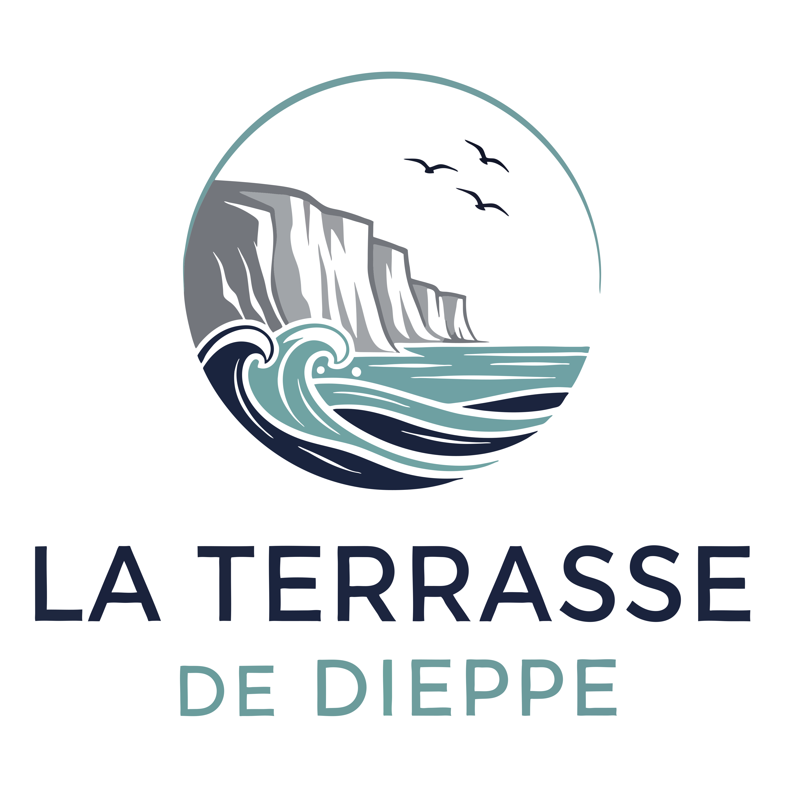

★ ★ ★ ★
Le gîte
Maison de ville spacieuse 4★ pour 10/12 personnes et deux bébés.
Sur l'un des axes principaux de la ville, maison de 220 m² au centre de Dieppe. Idéale pour des retrouvailles en famille ou entre amis, cette maison de ville ancienne, avec parquet et moulures, possède une vaste terrasse bois orientée au soleil du matin, et un jardin clos de murs.
👥 10/12 + 1 bébé🚪 5 chambres🚿 3 salles de
bains🚽 3 wc🛏 4 lits 90×190🛏 3 lits 160×200🛋
1 convertible 2 pers.🍼 1 lit bébé🍼 1 lit parapluie
Activités
Des idées d'activités à faire par thème : restaurants, foires & marchés, enfants, en mer, coups de cœur, sur la terre ferme, patrimoine, en l'air, moto…
Travaux
Avant d'être mise en location, cette maison de 1910 a fait l'objet d'une importante restauration. Découvrez l'avant/après !